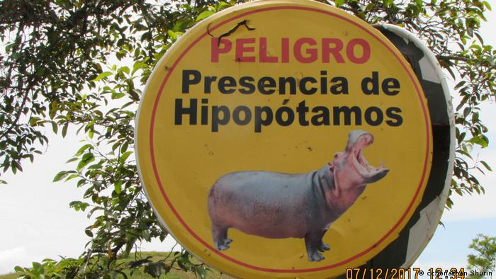

El texto “El problema sigue creciendo: hipopótamos a la venta en Colombia”, escrito por la periodista Diana María Pachón y publicado en Mongabay Latam en noviembre de 2021, narra su investigación acerca del tráfico ilegal de hipopótamos que ha ido incrementando en Colombia hasta convertirse en un problema que puede ocasionar la muerte de quienes habitan cerca de lagos, el Río Magdalena o de quienes pescan por sus orillas.
Diana comienza contando dos historias igual de terribles: hombres que tuvieron la mala suerte de acercarse demasiado a este animal sin ser consciente de ello y sufrir las consecuencias de una mordida que puede pesar casi 130 kilogramos por centímetro cuadrado. Comenzar con las historias le da al lector una perspectiva real de la gravedad del problema y de la agresión de la que son capaces estos animales que, a primera vista, pueden parecer tiernos. La forma de narrar como historia las entrevistas que le dieron estos dos hombres víctimas de ataques, permite al lector pintar una imagen en su mente de los pantanos y pastizales por los que estos animales viven; así como transmitir lo que sintieron al estar cara a cara con uno de los mamíferos más peligrosos del mundo.
Después, la autora comienza a dar datos duros y contexto del problema.El texto se centra, sobre todo, en un tema: el tráfico ilegal de los hipopótamos en Colombia. Es común que cuando pensamos en un hipopótamo, pensemos en África. Rara vez alguien asocia al animal con Colombia y con debida razón, pues esta especie no es nativa de este país latinoamericano; sino que fue introducida por el capricho de uno de los narcotraficantes más conocidos a nivel mundial, el capo de los capos: Pablo Escobar. Nadie imaginó que la muerte del capo en 1933 causaría una epidemia de sus mascotas; y que, años después de su muerte, seguiría fomentando la venta y compra ilegal de ellas, principalmente entre hacendados que buscan tener un recuerdo de Escobar. A pesar de que esto es de conocimiento público, la autora hace énfasis en que la policía no hace nada al respecto. Buscó figuras de autoridad para pronunciarse acerca del tema como el Ministerio de Ambiente, el cual no se pronunció sobre este tema, y aventó la responsabilidad del problema al Instituto de Investigación de Recursos Biológicos Alexander von Humboldt, el cual solo se enfoca en entender las consecuencias de esta especie para los habitantes y el ecosistema. Finalmente, entrevistó a la Corporación Autónoma Regional de las Cuencas de los Ríos Negro y Nare (Cornare) —autoridad ambiental de la zona— dice que ha denunciado la venta de hipopótamos ante la policía de Doradal, pero las quejas no fueron atendidas. Denuncia de forma sutil la incompetencia de la policía, al ser la única que niega que exista este delito argumentando que es muy difícil que se puedan traficar hipopótamos. Es en este momento en donde entra el personaje principal del texto: un narcotraficante de hipopótamos, quien ha traficado por lo menos seis de ellos.
Es muy importante que la autora no solo se enfoca en el tráfico de estos animales, sino en los impactos ambientales que tienen sobre Colombia. Para esto, entrevistó a biólogos de la Cornare, quienes mencionan el efecto que tienen las heces sobre los lagos, incluida la desaparición de muchas especies. A pesar de citar la entrevista, Diana explica los tecnicismos al autor. También incluye datos cuantitativos acerca del número aproximado de animales libres cerca de cañas y ríos (70) y del número de machos y hembras que forman parte de un programa de esterilización (24 más 11 que han sido intervenidos quirúrgicamente). Hay una investigación por parte de la autora del medicamento que se les aplica (Gonacon), en qué países se usa (China, Australia y EEUU), por qué agencia fueron donadas a Colombia (Animal and Plant Health Inspection Service USDA APHIS), así como del número de dosis con los que se tendría que inyectar a cada individuo (3). También saca los costos de las intervenciones quirúrgicas y explica por qué es tan difícil el tener un control de esta población. A pesar de no adentrarse en la postura que sugiere sacrificarlos, sí la menciona, así como el conflicto con organizaciones de protección animal. Citando a diversos biólogos y expertos en el tema, Diana se mantiene objetiva a lo largo del texto, dando cifras, datos y entrevistas que sostienen el punto central del texto: es un problema que ya se salió de las manos del gobierno de Colombia.
Por otro lado, el personaje del traficante es en quien se enfoca en la segunda mitad del texto. Queda claro que Diana lo acompaña, va a su recóndita casa e incluso convive con su hija y con el animal que tiene en turno, a quien la niña apodó Campanita. Es interesante el análisis que hace de Campanita, quien actúa más como perro que como hipopótamo. De igual forma, no hace una crítica al traficante; incluso menciona los precios por los que los vende y cuánto le cuesta mantenerlo. Comparte sus tácticas de caza y separación de la cría de su madre. Conoce los peligros, pero eso no lo detiene de hacerlo; resulta que un traficante de hipopótamos puede ganar millones por encima del salario mínimo colombiano. La hija es otro gran personaje. Una niña que realmente no entiende el negocio de su papá; para ella, estos animales son huérfanos a los que les dan asilo hasta encontrarles otro hogar. Su casa es una transacción, una parada. Ella no imagina que con ella duerme y nada una de las bestias más peligrosas del mundo. El resto del texto se convierte en una crónica; narrando su día en casa del traficante y su conversación con él y con su hija. Narra las problemáticas que encuentran al colocar a las crías y cuánto le cuesta mantenerlas por día. También los años de cárcel que podría enfrentar en caso de ser atrapado. Su elección de fuentes, entrevistas y combinación de datos duros y cuantitativos con un periodismo narrativo, hace de este texto un ligero de leer. Aborda una de las problemáticas más controversiales y pasadas por alto que experimenta la población colombiana, tal vez no de las ciudades, pero sí de diversos pueblos. Es un análisis completo de lo que rodea al tráfico de hipopótamos, las problemáticas que presenta a su población y al medio ambiente, las posibles soluciones, el rol de organizaciones y el gobierno y nos remonta al inicio de esta historia, no dejando de lado ningún dato importante.
https://es.mongabay.com/2021/11/problema-hipopotamos-a-la-venta-colombia/